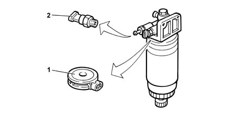

DESCRIPTION OF COMPONENTS
- Path
- Descriptions > 10 ENGINE > 1044 FUEL CIRCUIT PUMP/S AND DEVICES > 1044D FUEL HEATING DEVICE > DESCRIPTION OF COMPONENTS
- Kind
- system description
- Applies to
- engines: 2.4 JTD 10V; all production periods
- Interactive page
- https://sloeber94.github.io/elrnDB-lThss/en/#/610844
Applies to: engines: 2.4 JTD 10V; all production periods
FUEL HEATING DEVICE
Specifications
Type
The fuel filter is equipped with a fuel preheating device (1) controlled by the control unit and a fuel pressure sensor. When diesel fuel temperature is lower than 6 °C, an electrical coil heats the fuel to a maximum of 15 °C before directing it to the pressure pump.
